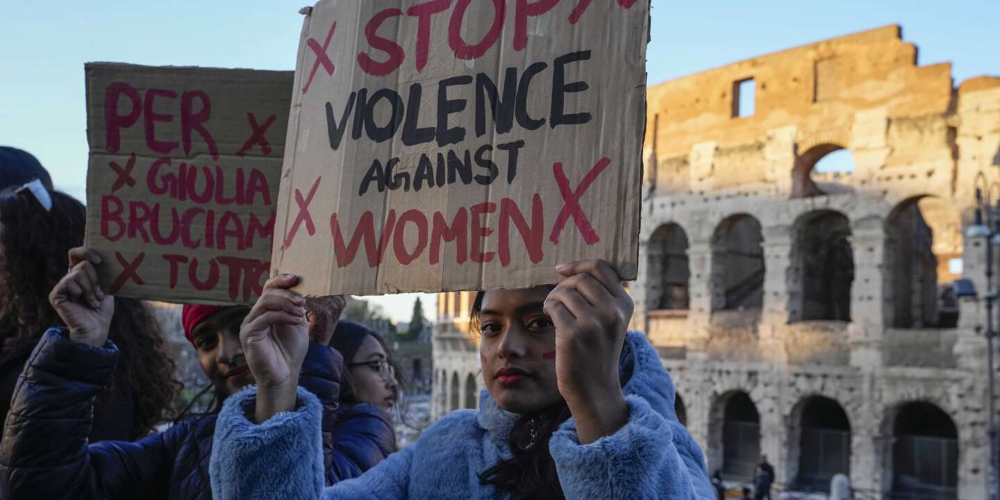

''Faisons du bruit'' , c'est les mots qui résonnent dans les rues de la capitale italienne ce samedi. Le 25 novembre, en Italie c'est la journée internationale contre la violence de genre, c'est pour celà que les italiennes sont descendues dans la rue ce samedi afin de lutter contre ces actes violents. 500 000 personnes étaient présentes dans ce dense cortège féministe. Le rendez-vous était donné au centre de la ville avec un départ du Cirque Maxime sur la Piazza San Giovanni et s'est poursuivi à travers toute la capitale. Et parmi ceux qui ont participé à la manifestation se trouvait le secrétaire du Parti démocrate, Elly Schlein, le maire de Rome, Roberto Gualtieri, et le secrétaire de la CGIL, Maurizio Landini. Symbole de la lutte contre la violence faite aux femmes, beaucoup portaient des rubans rouge ou avaient le visage peint de la même couleur. Une révolte qui s'est étendue à travers tout le pays notamment à Turin ou encore Milan. ''Le silence est complicité'' ont exprimés certains.
